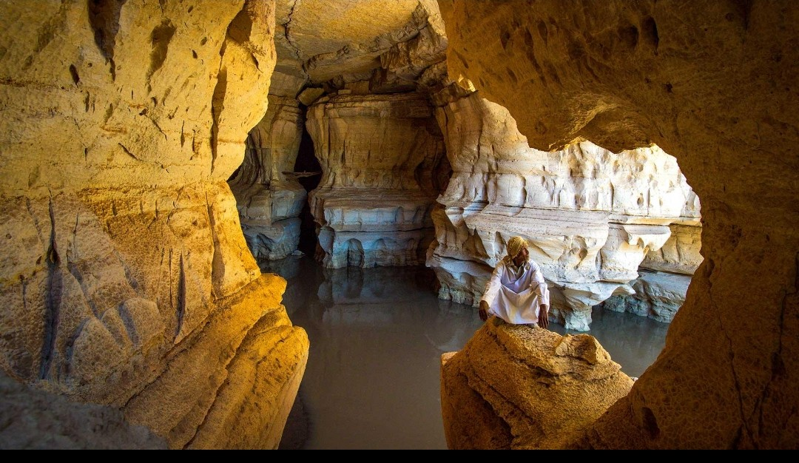
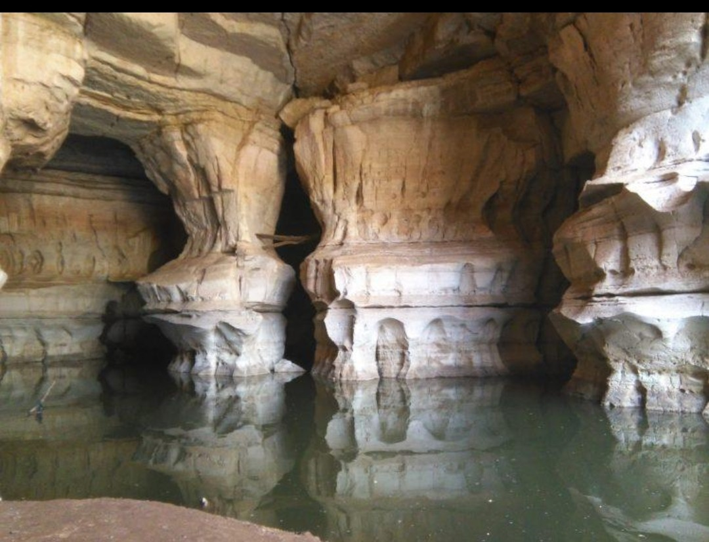
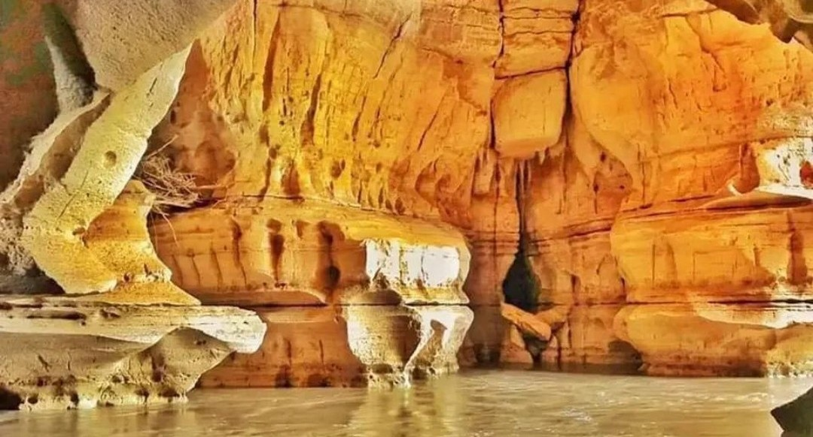

The main entrance of the cave is one of the most beautiful places for visitors. Large natural rock walls and green trees surround the area. Many tourists stop here to take photos before entering the cave. The sound of the river and cool air make the place peaceful and relaxing. It is also the starting point for exploring the long underground tunnels of the cave.

The Weyib River flows through the cave and created the cave naturally over many years. Visitors can see beautiful water moving between large rocks and dark tunnels. The river makes the cave cool and fresh inside. This place is famous because the water and rocks together create amazing natural views. Many people enjoy walking near the river and learning about the history of the cave.

Inside the cave, there are large open chambers with tall rock formations. Some chambers are very wide and look like natural underground halls. Visitors can see different shapes formed by rocks over a very long time. The dark atmosphere and echoing sounds make the experience exciting and unforgettable. These chambers show the natural beauty and uniqueness of Sof Omar Caves.